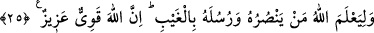
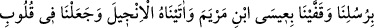
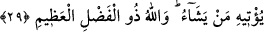

ADÂLETİ YERİNE GETİRMELERİ İÇİN
KİTÂBI VE MÎZÂNI İNDİRDİK
25. Andolsun biz peygamberlerimizi açık delillerle gönderdik ve insanların adâleti
yerine getirmeleri için beraberlerinde kitâbı ve mîzânı indirdik. Biz demiri de
indirdik ki onda büyük bir kuvvet ve insanlar için faydalar vardır. Bu, Allah’ın,
dînine ve peygamberlerine gayba inanarak yardım edenleri belirlemesi içindir.
Şüphesiz Allah kuvvetlidir, daima üstündür.
26. Andolsun ki biz, Nûh’u ve İbrâhim’i gönderdik, peygamberliği de kitâbı da
onların soyuna verdik. Onlardan (insanlardan) kimi doğru yoldadır; içlerinden
birçoğu da yoldan çıkmışlardır.
27. Sonra bunların izinden ardarda peygamberlerimizi gönderdik. Meryem oğlu
Îsâ’yı da arkalarından gönderdik, ona İncil’i verdik; ona uyanların kalplerine
şefkat ve merhamet vermiştik. Uydurdukları ruhbanlığa gelince, onu biz yazmadık.
Fakat kendileri Allah rızâsını kazanmak için yaptılar. Ama buna da gereği gibi
uymadılar. Biz de onlardan îmân edenlere mükâfâtlarını verdik. İçlerinden çoğu da
yoldan çıkmışlardır.